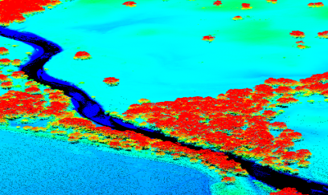

<article class="mini-post">
	<header>
		<h3>
			<a href="single.html">AL2 / AL3 LiDAR</a>
		</h3>
		<time class="published" datetime="2015-10-17">January 2013</time>
		<a href="#" class="author">
			
		</a>
	</header>
	<a href="projects" class="image">
		
	</a>
</article>